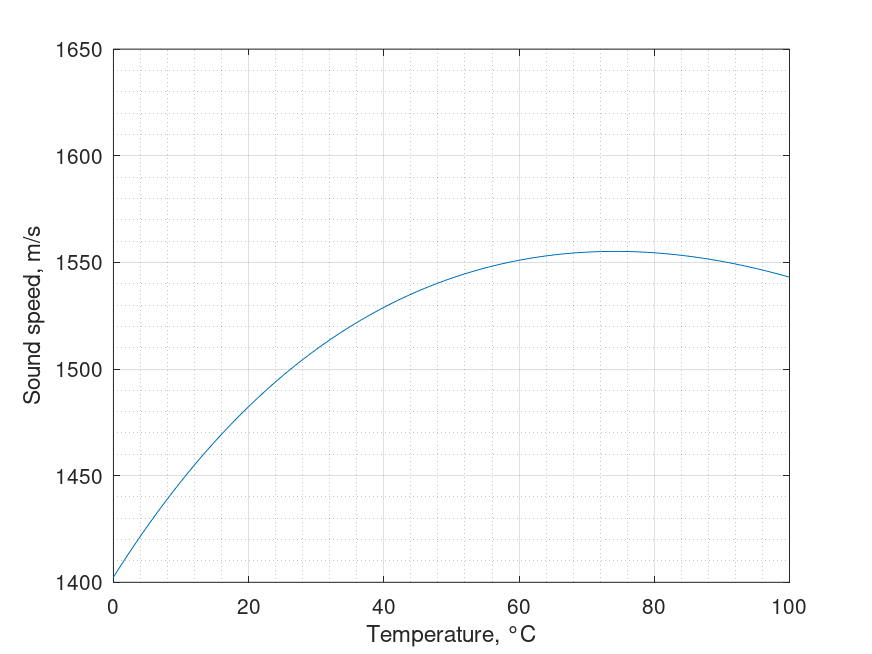

Sound speed in pure water. Marczak equation
Mathematical definition
$$\boxed{C\left( T \right) = {k_0} + {k_1}T + {k_2}{T^2} + {k_3}{T^3} + {k_4}{T^4} + {k_5}{T^5}}$$
| Notation | Description | Conversion | Units | Limits |
|---|---|---|---|---|
| $C$ | sound speed | $m/s$ | ||
| $T$ | temperature | $^{\circ}C$ | $0 < T < 95$ |
| $k_{0}$ | $+1.402385 \times 10^{3}$ |
| $k_{1}$ | $+5.038813$ |
| $k_{2}$ | $-5.799136 \times 10^{-2}$ |
| $k_{3}$ | $+3.287156 \times 10^{-4}$ |
| $k_{4}$ | $-1.398845 \times 10^{-6}$ |
| $k_{5}$ | $+2.787860 \times 10^{-9}$ |
Octave/Matlab implementation
function C = sound_speed_water_marczak(T)
% Arguments
% T: temperature \ degree Celsius \ 0 < T < 95
% Results
% C: speed of sound in pure water \ m/s
k0 = +1.402385e+3;
k1 = +5.038813e+0;
k2 = -5.799136e-2;
k3 = +3.287156e-4;
k4 = -1.398845e-6;
k5 = +2.787860e-9;
C = k0*(T.^0) + k1*(T.^1) + k2*(T.^2) ...
+ k3*(T.^3) + k4*(T.^4) + k5*(T.^5);
end
Computational examples

References
- Marczak, Wojciech, "Water as a standard in the measurements of speed of sound in liquids", 1997